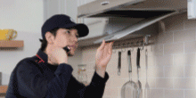
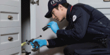
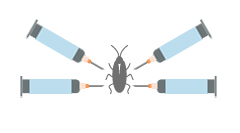
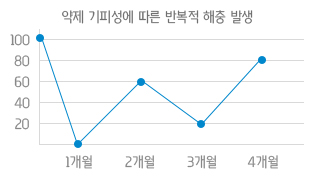
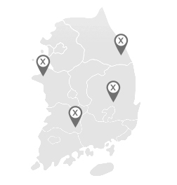
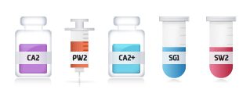
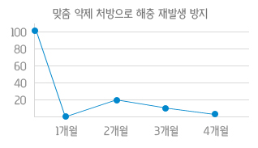
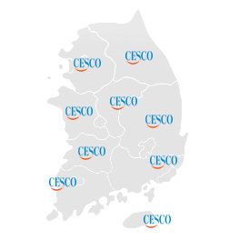

문제 해충의 종류, 서식처, 생장 주기 등과 발생장소의 환경적 요인을 전문가가 정확히 진단하여
1:1 통합 맞춤제작방제솔루션을 제공하여 해충 문제를 케어하는 세스코 서비스
세스코는 발생 및 유입과정에서부터 퇴치에 이르기까지 단계적으로 제어하는 IPM(Intergrated Pest Management)을 적용한 통합방제솔루션을 기반으로각 고객님의 상황에 맞게 1:1 맞춤해충방제솔루션을 제공합니다.
쥐는 전선을 갉는 습성으로 누전 및 화재를 유발하고, 건물을 노후화 시킴
식중독, 유행성 출혈열, 서교열 등의 질병 유발
해충방제 서비스 컨설턴트가 직접 방문하여 문제 해충발생의 원인파악부터 퇴치 후 재발 방지까지, 맞춤 솔루션을 제공
식중독, 콜레라, 세균성 이질, 장티푸스 등 100여종의 병원균을 보유
아토피, 알레르기 천식, 비염유발
해충방제 서비스 컨설턴트가 직접 방문하여 문제 해충 발생의 원인 파악부터 재발 방지까지, 맞춤 솔루션을 제공
식중독, 알레르기 천식, 비염 등을 유발
해충방제 서비스 컨설턴트가 직접 방문하여 문제 해충 발생의 원인파악부터 퇴치 후 재발 방지까지, 맞춤 솔루션을 제공
침대 진드기는 매트리스 내 떨어진 사람의 각질, 비듬을 먹이원으로 사용하며, 한 사람이 하루에 떨어뜨리는 양으로 수천 마리가 수개월간 생존이 가능
소아천식, 알레르기 비염, 아토피성 피부염 유발 가능
국내에서 피해를 입히는 종은 대체로 과일 초파리와 얼룩무늬등 초파리
음식물 쓰레기통, 하수구, 식기세척기, 싱크대 배관 등에 알을 낳고 유충으로 서식, 발생하며 더러운 곳이나 상한 음식에 앉기 때문에 전염성 질병과 세균을 옮길 수 있는 해충
심각한 피부 손상과 2차 감염 가능
하루 1~5개, 일생 200~500개 산란 가능한 놀라운 번식력
전문 컨설턴트가 발생가능성을 최소화한 빈대 정기 모니터링 솔루션 제공
식중독, 알레르기 천식, 비염 등을 유발
해충방제 서비스 컨설턴트가 직접 방문하여 문제 해충 발생의 원인파악부터 퇴치 후 재발 방지까지, 맞춤 솔루션을 제공
주의사항①서비스 후 3시간 내 출입금지 ②환기 ③커버링 제거 ④청소
저장 중의 곡식과 가공품에 해를 끼치는 해충군
저곡해충은 크게 나방류, 비틀류 2가지로 구분
해충방제 서비스 컨설턴트가 고객사를 방문하여 저곡해충에 대한 페로몬 유인제품을 활용하여 정기적으로 모니터링을 실시
첫번째 단계
사전조사 및 진단

· 문제 해충의 종류 및 생장주기, 서식지, 성별파악
· 침입 및 이동경로 파악
두번째 단계
처방
· 세스코 IPM 기술연구소에서 자체개발
· 생산된 1:1 맞춤 방제 약제 시스템을 적용
세번째 단계
초기 집중퇴치

· 처방된 약제의 투약 및 방제솔루션 적용
· 해충의 유입통로에 대한 시설 보완 컨설팅
네번째 단계
정기관리 서비스
· 지속적인 문제 해충 현황 파악으로 해충 재발 방지
· 정기관리 중 해충 재발 시 신속한 무료 출동
해충의 종류, 서식 환경을 고려하지않는
약제 위주의 서비스로 무분별한 약제 남용

단일 약제의 반복 사용으로 인한
해충의 기피성 증가로 반복적 해충 발생

특정 지역, 소수의 인원으로 구성되어
제한된 지역, 신속한 서비스 불가

해충의 종류, 서식환경에 대한 65가지 환경진단 기법으로
적합한 약제를 선정, 적용함으로써 소량의 약제만으로도 퇴치 가능

세스코가 자체 개발한 300여가지 바이오 맞춤약제로
해충의 기피성 방지하여 최소 서식율 유지

전국 100개 지사, 3,500명의 서비스 컨설턴트 보유로
전국 어디든지 신속한 서비스가능
